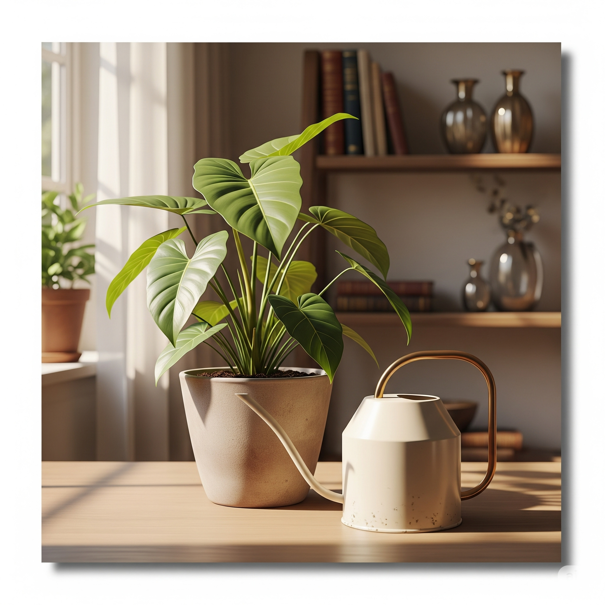

Trocar vaso ou ajustar rega? Descubra no blog

Folhas amareladas, solo encharcado ou raízes à mostra: quando esses sinais aparecem, muitos tutores de plantas se perguntam se é hora de trocar o vaso ou apenas ajustar a rega. A resposta pode surpreender.
Em grande parte dos casos, o problema está na frequência de rega ou na drenagem do substrato. Um ajuste simples na rotina de cuidados pode salvar a planta sem a necessidade de replantio.
Mas se o vaso estiver pequeno demais, com raízes circulando e falta de espaço evidente, a troca é inevitável. A dica é escolher um vaso apenas um pouco maior e aproveitar para renovar o substrato.
No nosso guia completo, mostramos como identificar cada situação e tomar a melhor decisão para suas plantas ficarem saudáveis e bonitas.
← Voltar para o blog